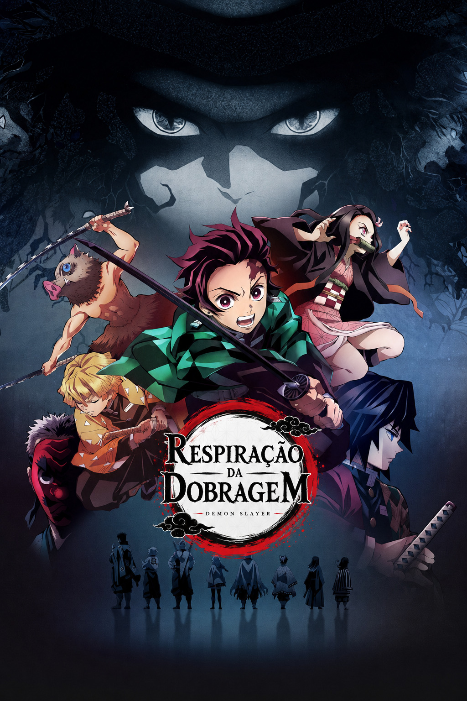

O que é a Respiração da Dobragem?
Dar voz às histórias que nos inspiram 🎙️🇵🇹.

Olá a todos!
Somos a Respiração da Dobragem, um pequeno grupo de apaixonados por dobragem e anime que dedica o seu tempo livre à criação de fã-dobragens em português. Embora sejamos uma equipa muito reduzida e com recursos limitados, partilhamos todos o mesmo objetivo: dar voz às histórias e personagens que tanto gostamos, ao mesmo tempo que desenvolvemos as nossas capacidades na área da dobragem.
Depois de várias conversas e planeamento, tomámos a decisão de embarcar num dos nossos projetos mais ambiciosos até à data: a redobragem de Demon Slayer: Kimetsu no Yaiba.
Numa fase inicial, iremos concentrar os nossos esforços na Primeira Temporada, procurando oferecer uma adaptação feita com dedicação, respeito pela obra original e, acima de tudo, muita paixão por aquilo que fazemos. Este projeto representa um enorme desafio para uma equipa tão pequena, mas também uma oportunidade incrível para crescermos enquanto dobradores e criadores de conteúdo.
Queremos deixar claro que este é um projeto de fãs, realizado por fãs, sem qualquer objetivo comercial. O nosso foco é proporcionar entretenimento à comunidade e criar algo de que possamos todos orgulhar-nos.
Ao longo das próximas semanas iremos partilhar novidades sobre o desenvolvimento do projeto, mostrar alguns bastidores do processo de gravação e apresentar parte da equipa que está a tornar esta aventura possível.
E temos também uma novidade para anunciar: o trailer oficial da nossa redobragem encontra-se atualmente em produção e será lançado em breve! Será a primeira oportunidade para conhecerem o resultado do nosso trabalho e terem um pequeno vislumbre do que estamos a preparar para esta versão de Demon Slayer.